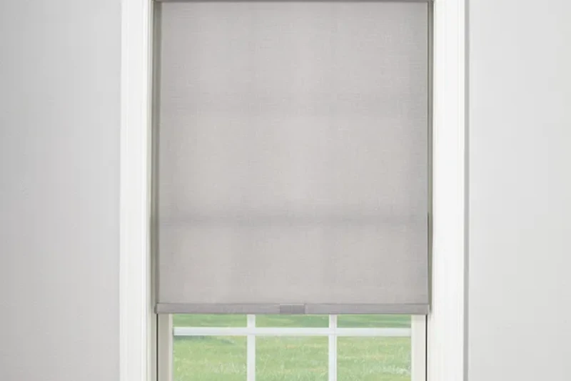

Window Shade Opacities, Explained
Call Brent & Edna today at 405-259-5599
for your window treatment questions.
The primary job of a window treatment is to control light and provide privacy. Deciding how much light control and privacy you need is one of the first things to nail down when choosing blinds, shades, or drapery. This short guide will give you everything you need to know about opacity—a measure of how much light passes through a particular fabric—so you can pick the right window treatments for your home.
What’s the right opacity for your blinds, shades, or drapery?
The higher the opacity, the harder it is for light to pass through a fabric. As you might expect, a higher opacity also translates into greater privacy. A lower opacity provides less privacy and protection from the sun. So, what opacity should you choose? Here’s a breakdown of the basic opacity levels from lowest opacity to highest.

Sheer
This is the lowest of all opacities. A great example of a sheer fabric is the sheer white drapery you often see layered under heavier, room-darkening drapery. Light easily passes through sheer drapery. It is so translucent that you can virtually see everything through it. It is a popular choice for any room where the desired effect is elegance and luxury. You’ll also find cellular shades in sheer fabrics, layered shades in sheer fabrics, and sheer shades—a beautiful fabric version of horizontal blinds.

Semi-sheer
One step up the opacity scale you have semi-sheer. Drapery, cellular shades, layered shades, sheer shades, and roller shades all have semi-sheer options. Semi-sheer window treatments are a good choice for rooms where you want to maintain a high level of light in the room but would like to maintain at least a minimal level of privacy.

Light-filtering or Semi-opaque
One of the most popular levels of light control, light filtering or semi-opaque options are available in nearly all window treatment categories. This balance of light filtering and semi-privacy is quite popular.
Room-darkening
Room darkening blinds, shades, and drapery offer more light-blocking than window treatments labeled “light-filtering,” and they’re just as popular. They are excellent for rooms where you would like much of the light blocked when the window treatments are in the closed position. For most people, this is as dark as they need their room to be. But for those who demand an even darker room, there’s one more level of opacity.

Blackout
Blackout fabrics are most often used in bedrooms and entertainment rooms. They provide maximum light control and privacy. Blackout fabrics are available in roller shades, cellular shades, and drapery. Tailored Roman shades and natural shades can be made with a special blackout liner to give you a shade that blocks nearly 100% of the light.
There’s an opacity to fit every style. See all the options: contact your Shaded In The Sun Expert and find the window treatment options that fit your own unique needs.